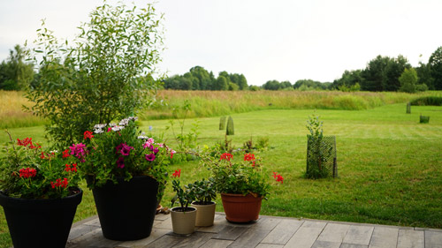
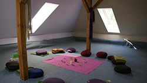
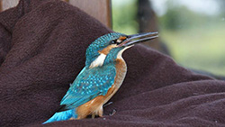
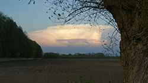
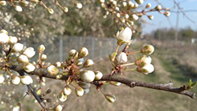

Dom pod Wierzbą to spokojny rodzinny dom, a jednocześnie ośrodek
rozwoju. Niepowtarzalne jest to, że Joanna i Paweł na co dzień tu
mieszkają. To nadaje ośrodkowi przytulny charakter rodzinnego
domu. To miejsce na szkolenia, warsztaty i treningi. Tutaj też
głównie prowadzimy nasze sesje akupunktury, psychoterapii,
autorskie warsztaty i treningi oddechowe. Dom i jego położenie
dają wytchnienie, głębokie zanurzenie w ciszy i naturze. Sprzyja
to kreatywnej i duchowej pracy.

Piętro to czterdziestopięciometrowa sala warsztatowa wyposażona w
materace i poduchy. Na parterze do dyspozycji jest salon, dwie
łazienki. Można też skorzystać z naszego gabinetu terapeutycznego.
W domu jest dużo przestrzeni i swobody. Przyroda przez obszerne
okna wnika do wnętrza, a gdy na trawniku smakołyków szukają dwa
zaprzyjaźnione jelonki, serce mocniej bije, gdy się im patrzy
prosto w oczy z tak bliskiej odległości.
Tuż przed ostatnim zakrętem do ośrodka stoi stara Wierzba, od
której pochodzi nazwa, a dalej zaczyna się las. Dom stoi wśród łąk
przy lesie, zamiast bramy i płotu strzegą go przepiękne dęby. Mamy
sporo miejsca na ognisko, aktywności i odpoczynek wśród zieleni.
Można wybrać się na spacer nad Widawę lub stawy. Nazrywać ziół,
kupić jajka i olej od naszego sąsiada.
Podczas szkoleń i warsztatów zapewniamy posiłki. Gotujemy pysznie
i zdrowo. Skosztować tu można prostych dań wegańskich i
wegetariańskich. Część warzyw pochodzi z naszego permakulturowego
ogródka. Do wyboru jest pieczywo nie tylko na mące pszennej. Choć
królują zupy, kasze i warzywa, nie stronimy od smacznych kiełbasek
przy ognisku. Dostosowujemy posiłki do potrzeb grupy. Można tutaj
zjeść naleśniki z czarnego bzu i kanie rosnące za domem.




Nasze miejsce to baza na szkolenia, warsztaty, coaching, terapię
dla wszystkich, których w rozwoju wspiera bliskość natury.
Dom pod Wierzbą jest położony na Dolnym Śląsku, niedaleko Jelcza –
Laskowice, zaledwie 30 km od Wrocławia, 20 km od Oławy, 10 km od
Oleśnicy.